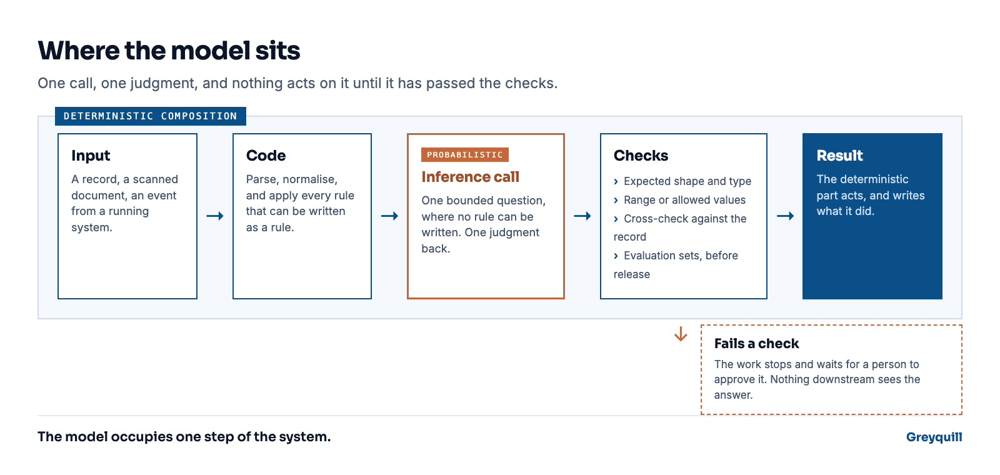

AI & Analytics
A hallucination is the model working correctly
A model is random by design. The reliability comes from the harness around it: deterministic code that calls the model like a function and checks every answer it returns.
Ask a model the same question twice and you can get two different answers. That is not a defect in the build. A model writes language by sampling from a probability distribution, and that sampling is the reason it can produce a sentence nobody has written before.
So when a model hallucinates, it is showing you the thing it is best at, at a moment you did not want it. Taking the randomness away is not an option, because there is no model left afterwards. The work is to make the randomness pay off, which is the same work as any other job where you cannot control every input.
Every AI system has two halves
One half is deterministic. It is the code we write, it behaves the same way on every run, and we can reason about it line by line. The other half is the model, and it is not deterministic at all.
Most products hand the model both halves. You ask, and it decides what the answer is and how to get there. As a way to explore an idea, that works. As the architecture for a claims pipeline, it means the system can reach a different decision on Tuesday than it reached on Monday, with no code change in between and nothing to point at afterwards.
The model is a function that returns a judgment
When we build, the model is an inference function. It takes a bounded question and returns a judgment. It does not hold the workflow, it does not choose the next step, and it does not write to a system of record.
Intelligence as a function, called for a specific expected result.
Everything around that call is ordinary deterministic code. Somewhere inside it there are places where a judgment is unavoidable: the input is a photograph of a form, or a paragraph of free text, or a pattern in a running system that somebody used to have to sit and watch. No rule can be written for those, and that is exactly where the call goes. The rest stays code, because code is cheaper to test and easier to defend.
Holding that line is what lets these systems work in places where being wrong is expensive.
The harness is where the reliability lives
An inference call on its own is a liability. What makes it safe is what surrounds it. The answer has to come back in an expected shape and an expected type. It is held to a range or a set of allowed values. It is cross-checked against the record it claims to be about. Evaluation sets run over the whole path before anything ships, and again whenever a prompt or a model changes. Nothing is trusted because the model said it.
Most anomalies are caught and settled without a person hearing about it. Where the harness cannot settle one, the work stops and asks for an approval. That path exists in every system we build and it stays quiet, which is the point. A reviewer is worth having when the queue holds the cases that genuinely need judgment rather than everything the system touched that day.

This is old practice
Building the harness is our core expertise, and there is nothing modern about it. It is deterministic programming, which is what programming was before the model arrived and never stopped being right. What we expect of a system has not moved: same input, same state, same behaviour, and an honest stop when it cannot manage that. The model is impressive. It does not get an exemption.
We have built these harnesses for financial services, for retail, and for document-heavy operations where the work is reading scanned paper and generating documents from what it says. Different domains, same shape. Deterministic composition, with an inference call at the one step where judgment cannot be written down as a rule.
A modest model with a good harness wins
One result has held everywhere we have looked. A mediocre model inside a harness built for the problem beats a stronger model with nothing around it.
The frontier model is better at producing a plausible answer. It is no better at deciding whether that answer is safe to act on inside your business, because that depends on your data and your rules, and on what an auditor will ask you to show. None of it is in the model's weights. All of it is in the harness.
Which makes the model the replaceable part. We swapped one out on our own website chat and deleted around 800 lines of protective code, and the boundaries did not move: the four lines of code that keep our AI chat honest. That is the position you want to be in when the next model lands.